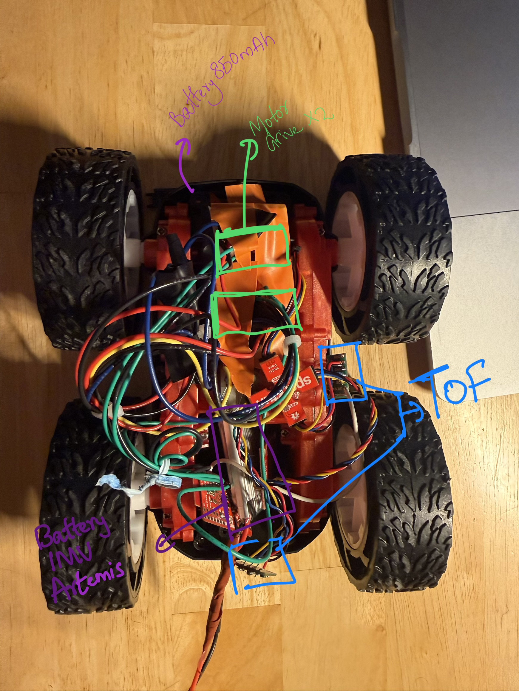
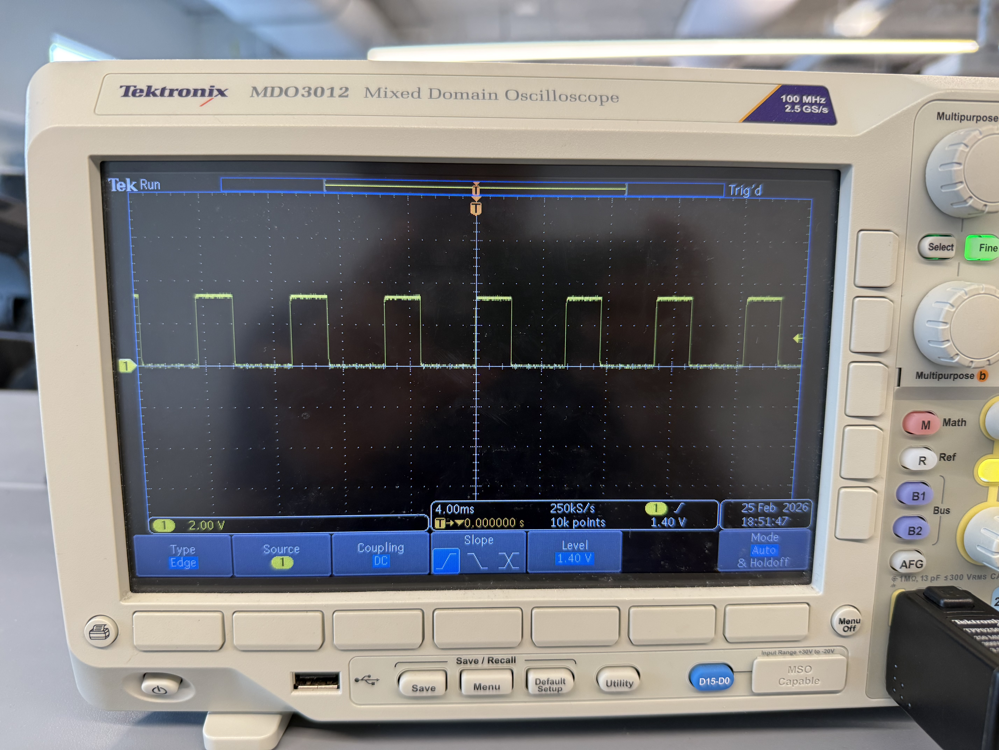

1. Objective
The purpose of this lab is to change from manual to open loop control of the car. At the end of this lab, the car should be able to execute a pre-programmed series of moves using the Artemis board and two dual motor drivers.
2. Prelab
Battery Isolation Discussion
The Artemis microcontroller and the motor drivers are powered by separate batteries. DC motors pull high, sudden surges of current when starting or changing direction. If the motors and the microcontroller shared the same power source, these current spikes would cause severe voltage drops across the circuit, potentially browning out or resetting the Artemis. Separating the logic power (650mAh) from the motor power (850mAh) ensures the microcontroller remains stable while the motors draw the amperage they need.
My initial idea was to use slightly longer wires to proper setup the car and then route the cables underneath the motors but then later realised that we dont need to close the car top and hence could route the cable via the top itself. The IMU position is still being debated upon.
Wiring Diagram
To deliver enough current for the robot to be fast, the two inputs and outputs on each dual motor driver were parallel-coupled. This essentially uses two channels to drive each motor, allowing the delivery of twice the average current without overheating the chip.(I will mount and clean up the car better).
Parallel-Coupled Output Architecture
(Right Side)
(Left Side)

Figure 1: Photo of the physical wired setup
3. Lab Tasks
Power Supply & PWM Testing
Before connecting the high-discharge Li-Ion battery, the parallel-coupled motor drivers were tested using an external power supply with a controllable current limit to make debugging easier. The supply was set to 3.7V (to simulate the battery) with a current limit of 1.0A.
An oscilloscope was used to verify the analogWrite() signals on the output pins of the
motor driver to show that power could be regulated.

Figure 2: Oscilloscope showing the PWM square wave on the driver output
Video 1: Wheels spinning as expected
Calibration and Straight Line Testing
Getting the car to drive in a straight line for 2m/6ft required a calibration factor. The testing surface had a slight slope towards the end and featured a textured floor, which caused the car to wobble to the left and then back to the right, along with inconsistent rolling resistance.
The motors were found to be asymmetric. Motor B (Left) required more power to match the RPM of Motor
A (Right). Initially, a baseline of Left: 60 / Right: 45 was tested, but the final
straight-line movement was tuned to Left: 65 / Right: 40.
I understand using delay() results in a blocking operation, and when moving onto future labs I will use either millis() or state machines to test driving patterns. (This will become more relevant in the driving with turns demo, where a time duration is passed as an argument to a function call to perform a specific manoeuvre.)
Code Snippet: Calibrated Straight Line (driveForward)
const int motorB_In1 = 14;
const int motorB_In2 = 13;
const int motorA_In1 = 15;
const int motorA_In2 = 16;
int leftBasePWM = 65;
int rightBasePWM = 40;
void driveForward(int duration) {
analogWrite(motorB_In1, leftBasePWM);
analogWrite(motorB_In2, 0);
analogWrite(motorA_In1, 0);
analogWrite(motorA_In2, rightBasePWM);
delay(duration);
}Video 2: Straight Trajectory Run 1
Video 3: Straight Trajectory Run 2
Open Loop Control: Sequence and Turns
For the final open-loop demonstration, the robot was programmed to execute untethered control with a sequence of straight drives and turns. Due to the textured floor, the static friction during an on-axis turn was higher.
To overcome this, a "kickstart" function was implemented. A high-power PWM burst of 150 was sent for 50 milliseconds to break static friction, immediately dropping to a sustaining PWM of 100 to complete the rotation smoothly.
Code Snippet: Turn Logic with Kickstart (turnRight)
int turnKickPWM = 150;
int turnSustainPWM = 100;
int turnPulseMs = 50;
void turnRight(int duration) {
analogWrite(motorB_In1, turnKickPWM);
analogWrite(motorB_In2, 0);
analogWrite(motorA_In1, turnKickPWM);
analogWrite(motorA_In2, 0);
delay(turnPulseMs);
analogWrite(motorB_In1, turnSustainPWM);
analogWrite(motorB_In2, 0);
analogWrite(motorA_In1, turnSustainPWM);
analogWrite(motorA_In2, 0);
delay(duration);
}Video 4: Executing open loop sequence with static friction break
4. Additional Tasks (5000-Level)
analogWrite Frequency Discussion
I considered what frequency analogWrite generates and if it is adequately fast for
these motors. The SparkFun Artemis Nano utilizes the Apollo3 microcontroller. The Arduino core's
analogWrite() function on this platform typically generates a PWM signal at around
~730 Hz.
Is ~730 Hz Adequate for Motors?
It depends heavily on the motor type:
| Motor Type | Recommended PWM Freq | Is 730 Hz OK? |
|---|---|---|
| DC hobby motors | 1 kHz – 20 kHz | Marginal — may cause audible whine |
| Brushed DC (driver ICs) | 5 kHz – 25 kHz | No — too slow |
| Brushless/BLDC (ESCs) | 50 Hz – 400 Hz | Yes |
| Stepper (via PWM) | Application dependent | Often fine |
Problems with low PWM frequency (~730 Hz) on DC motors:
- Audible whining/buzzing: The motor coils vibrate at the switching frequency, which lands right in the human hearing range (~20 Hz – 20 kHz).
- Cogging / jerky motion: The current has time to fully decay between pulses at low duty cycles, causing non-smooth rotation.
- Increased heat: Occurs in MOSFETs/drivers due to slow transitions and incomplete switching.
- Poor current regulation: The motor's inductance cannot smooth the current effectively at low frequencies.
Benefits of Manually Configuring Timers for Faster PWM
There are benefits to manually configuring the timers to generate a faster PWM signal. The Apollo3 features configurable CTIMER (Counter/Timer) peripherals. By directly configuring them to push the PWM into a much higher range (e.g., 20 kHz – 100 kHz), we gain several benefits:
- Eliminate audible whine: Pushing the frequency above 20 kHz moves the switching noise outside the range of human hearing.
- Smoother torque & lower ripple current: Higher frequency means the motor's inductance integrates the pulses into a nearly steady DC current.
- Better low-speed control: Provides finer resolution at low duty cycles without stalling or jittering.
- Driver IC compatibility: Many H-bridge chips have optimal efficiency ranges well above 730 Hz.
- Reduced EMI issues: Counterintuitively, some higher-frequency configurations with proper filtering produce less radiated noise than low-frequency hard switching.
The Key Trade-off: Higher frequency equates to more switching losses in the FETs. Therefore, there is a practical upper limit of around 50–100 kHz for most motor driver setups before efficiency begins to degrade.
Lowest PWM Value and Speed
I experimentally figured out the lowest PWM value at which the robot starts moving and the lowest value to keep it running once in motion.
- Breaking Static Friction: The lowest PWM value required to overcome static friction and get the robot moving from a complete rest was 35.
- Sustaining Minimum Speed: Once the car was already in motion, the kinetic friction was lower than the static friction. It was possible to step the PWM value down to 30 and still have the robot settle and maintain its slowest possible forward crawl without stalling.